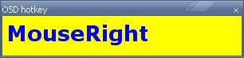
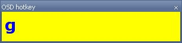

v 1.6 beta:
- font selector(tray menu -> options)
- remove + from normal keys, i.e. a+b+c+d will be shown as abcd
- trasparency level(tray menu -> options)
- log: all pressed keys are saved in log.txt .
Next time you start the program, log will be resetted
osdHotkey
osdHotkey is a simple program to show what you are
typing on your keyboard and mouse. It's main purpose
is to help people in the creation of tutorial and video-tutorial.
Note that it works on windows platforms only.
Screenshot


Source Code
osdHotkey is an opensource software. It's written in
AutoHotkey language, an extremely powerful scripting
language to accomplish hotkey tasks. You can download
the source code here.
Documentation
To use the program, just run "osdHotkey.exe".
A window appears and it starts to show what you are
doing with your mouse and keyboard. If you right
click on the tray icon, you can disable it.

While disabled, the main windows is hidden.
To show it just re-click on "Disabled".
If you click on options, you can set text
and background colors. Font(size and style) and transparency
level can be modified too.
Finally you can enable hotkey recognition
in a specified program only. To do it:
1) set the program(default is blender) by
selecting "Set class for class control"
and then click with left mouse button
on the program you want to show hotkey;
2) enable "class control" from tray menu. To
disable "class control" just re-click on it.
N.B.: you can resize the window to view more
hotkeys on the same line
References
AutoHotkey
Known Issues
This is the first version of this program.
It was tested, but yuo can find some bugs.
Please let me know at romeo84 AT gmail . com
Download
osdHotkey version 1.6 beta(NOTE: it's a beta, but it should work)
osdHotkey version 1.5
osdHotkey version 1.0(this version doesn't support color changes and class control)
Thanks
to Kernon Dillon(BlenderNation) for "class control" and "colors option" suggestions
to Matt Estela for "font selector" and "transparency level" feature
to Gerry Huck for "remove + from normal keys" feature
mBook Portal
radialm mouse enhancer
Spot section